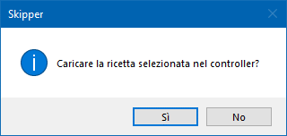
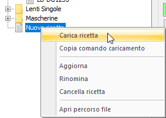
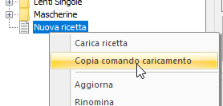
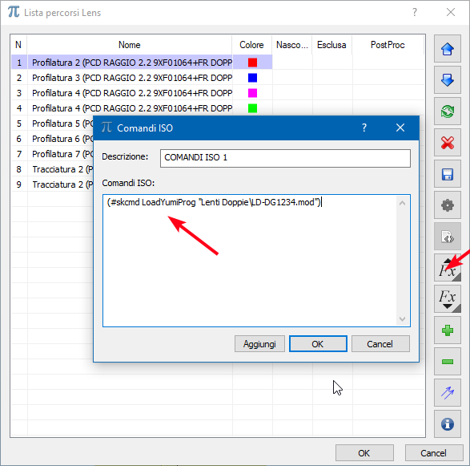

Le ricette possono essere caricate nel controller del robot in più modi:
In maniera manuale, facendo doppio click sulla ricetta nell’archivio ricette, confermando alla successiva richiesta di consenso

In maniera manuale, facendo click con il tasto destro su una ricetta in archivio e selezionando l’opzione Carica ricetta

In maniera automatica, inserendo il comando di caricamento della ricetta nel file cnc di lavorazione. Questo può essere fatto aggiungendo in cima alla lista percorsi di PigrecoGold un blocco di codice ISO contenente i comandi di caricamento. I comandi di caricamento vengono prodotti automaticamente dall’archivio ricette, scegliendo l’opzione Copia comando di caricamento, che inserisce nella clipboard di windows i comandi di caricamento specifici per la ricetta scelta,

quindi incollando il testo in un blocco iso posto in cima alla lista percorsi

Il comando di caricamento viene interpretato in fase di invio diretto o caricamento del file cnc.